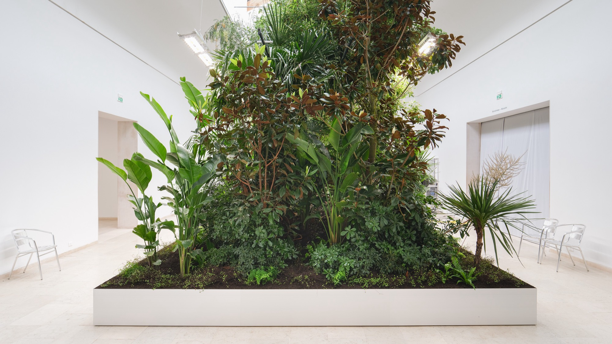

Architectuurbiënnale Venetië 2025
In mei 2025 trok ik naar Venetië om verslag uit te brengen van de 19de Internationale Architectuurbiënnale. Onder de titel Intelligens. Natural. Artificial. Collective. onderzocht curator Carlo Ratti hoe architectuur kan inspelen op een wereld die ingrijpend verandert. De tentoonstelling bracht architecten, kunstenaars, wetenschappers en onderzoekers samen rond vragen over klimaatverandering, technologische innovatie en collectieve intelligentie.
Mijn verslaggeving omvatte een reeks artikels over zowel Belgische als internationale bijdragen. Ik bezocht onder meer het Belgische paviljoen, waar landschapsarchitect Bas Smets en plantenneurobioloog Stefano Mancuso experimenteerden met planten die het binnenklimaat aansturen. Daarnaast schreef ik over de restauratie van de Finse en Deense paviljoens, de bijzondere scenografie van het Albanese paviljoen, de passieve koelingstechnieken van Bahrein en projecten waarin traditionele bouwkennis wordt gecombineerd met nieuwe technologieën.
Naast de tentoonstellingen zelf interesseerden me vooral de ideeën en maatschappelijke vragen die erachter schuilgingen. Wat kunnen we leren van bestaande gebouwen en ambachtelijke technieken? Hoe maken we onze steden bestand tegen extreme hitte? En welke rol kan architectuur spelen in de zoektocht naar betaalbare woningen en een duurzamere leefomgeving? Door observaties ter plaatse te combineren met gesprekken en achtergrondonderzoek probeerde ik de relevantie van de getoonde projecten zichtbaar te maken, ook buiten de context van de Biënnale.